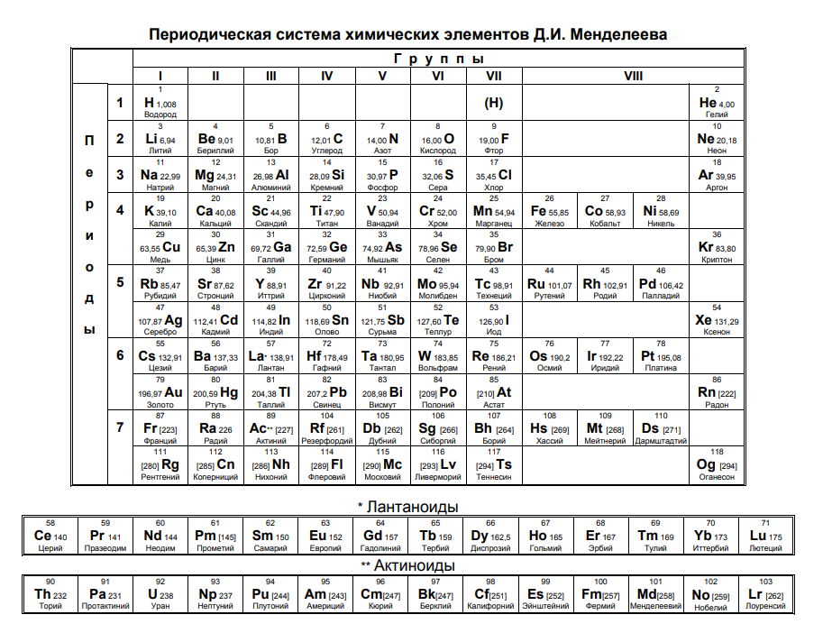
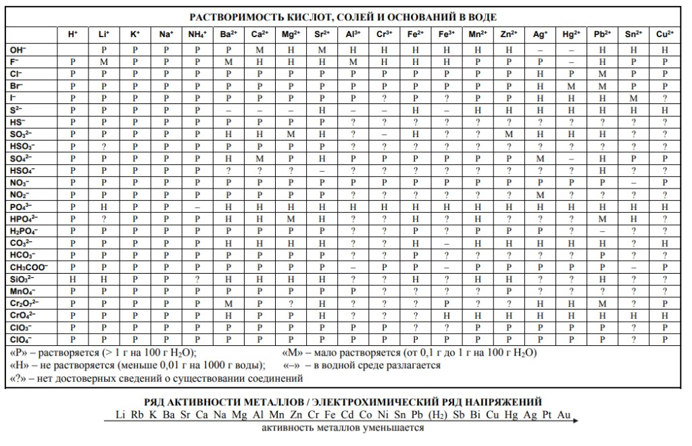

Периодическая система химических элементов Д. И. Менделеева
Группы I–VIII, периоды 1–7, отдельные ряды лантаноидов и актиноидов. При необходимости увеличьте масштаб страницы (Ctrl +) или прокрутите область по горизонтали.

Растворимость в воде и ряд активности металлов
Справочный лист в формате, близком к экзаменационным материалам: сверху — таблица растворимости кислот, солей и оснований; ниже на том же изображении — электрохимический ряд напряжений. При узком экране включите горизонтальную прокрутку.

Ряд активности (текст для поиска и копирования)
Активность убывает слева направо (как на стрелке под символами на скане).